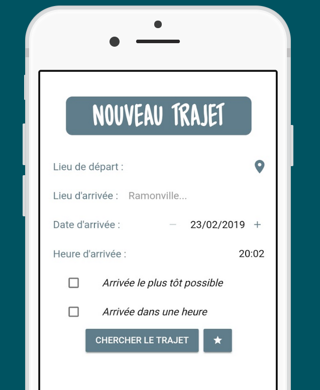

Mathilde Lannes
French student. Full stack developer.
hi.
My name is Mathilde Lannes and I'm a developer based in Toulouse, France. I enjoy web development, natural language processing and take an interest into the Semantic Web. I also like reading — a lot — and writing, drawing, embroidering — hand-crafting in general.this is a glimpse of my work.
I like automating things and skipping boilerplate code. This website shows a few of my personal projects, which aim at saving me time when I have to quickly prototype an idea. For more information about my work, you can check my GitHub account, or feel free to contact me.Vue Dashboard — dashboard interface in Vue.js

Vue Dashboard is a responsive admin dashboard template built with Vue.js.
It includes more than 30 useful components for building an application
in no time — forms, buttons, notifications, tabs... that follow the same customizable
graphic chart, so you can focus on the content of your application and
not worry about the look and feel being inconsistent.
kopi — a project generation tool

kopi is a command-line tool which generates an application based on pre-defined templates.
It gets you up and running in a few seconds, so you can focus on your awesome application
right away without having to care about boring boilerplate code.
kopi creates a folder for your application, installs the chosen template,
install NPM dependencies if any and can even open VS Code for you !
Toulouse à l'heure — organize journeys with public transport

Toulouse à l'heure helps you plan journeys within Toulouse.
You can travel by metro, bus or tramway ; TALH provides you the most
optimized itineraries, based on Tisséo data. Just specify at what
time you want to be somewhere and let the app do the math for you. You can
even set an alarm to remind you when you should leave your home !
For business enquiries or if you just fancy saying hey, get in touch with me :